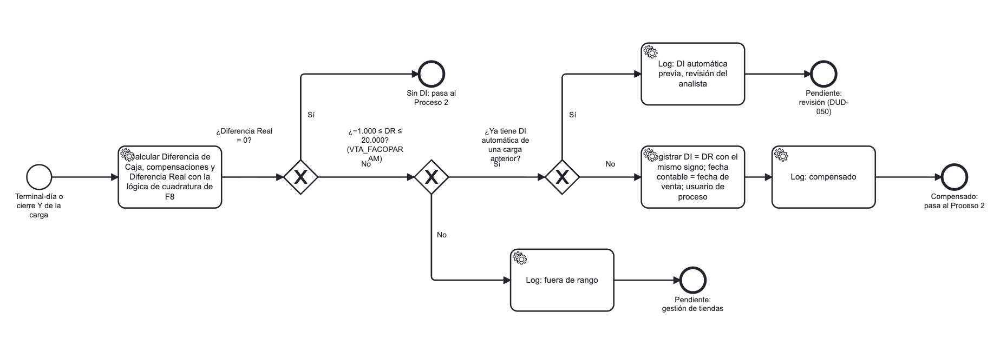
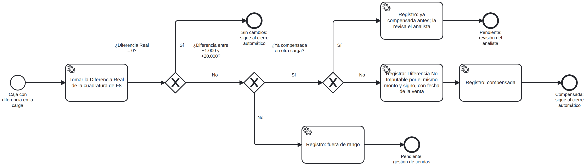

Falabella Colombia · F8 Automático · SCCFIN
FSCC-12957 · HU-01-T1
Compensación automática de Diferencia No Imputable
Documento técnico-funcional para desarrollar la subtarea
| Historia principal | FSCC-12901 · Compensación automática de DI dentro de un rango — Falabella Colombia |
| Subtarea hermana | FSCC-12958 · HU-01-T2 Cierre de caja automático (documento aparte) |
| Sistema | f8a.exe (VB6, proyecto FTEPROD/recaudacion.vbp) + Oracle 10g, esquema INTRANETTS |
| Fuentes | Código VB6; base de test sgfnprds (06-10-2026, solo lectura); Jira FSCC-12901/12957/12958; docs/FSCC-12901_Analisis.md, docs/CierreCaja_FACO_Reglas.md |
| Fecha | 06-10-2026 |
Contenido
- Ficha de la tarea
- Magnitud y componentes
- Lo que hay que saber antes de empezar
- Reglas de negocio
- Diseño en base de datos
- Cambios en el exe VB6
- Algoritmo
- Casos de prueba
- Decisiones pendientes y vacíos de información
- Riesgos, despliegue y vuelta atrás
- Diagramas del requerimiento (BPMN) y correspondencia con el sistema
- Enfoque implementado: base de datos, integrado con el cierre automático (T2)
Actualización 06-10-2026: T1 se implementó en Oracle reutilizando la cola, el trigger, el log y el cálculo de diferencia real de T2, que lo invoca primero. Ver la sección 12 y los scripts en docs/sql/FSCC-12957/. Las secciones 5 a 7 describen el diseño anterior (llamada desde Form133) y quedan como referencia.
Actualización 07-10-2026: FACO opera solo con cierre Y. T1 ya trabajaba por cierre Y y su lógica no cambia; T2 deja de cerrar la Z. Se suma el criterio CA9 de la HU actualizada. Ver la sección 12.6.
1. Ficha de la tarea
| Campo | Detalle |
|---|
| Objetivo | Al terminar la carga de recaudación del día, registrar en forma automática una DI (Diferencia No Imputable) por el monto de la Diferencia Real (DR) de cada caja de la carga cuya DR esté entre −1.000 y +20.000 (inclusive, DR ≠ 0). |
| Hace | Calcula la DR de cada caja (cierre Y) de la carga · decide si está en rango · graba la DI con usuario de proceso y glosa fija · registra un resumen (compensadas / excluidas con motivo). |
| No hace | No cierra cajas (eso es T2). No crea DI fuera de rango. No toca cajas ya cerradas. |
| Disparador | Final exitoso de la carga de sobres de Colombia: Form133.CargarArchivo ("Interfaz de Carga Manual de Sobres", toolbar CargaManual). |
| Resultado esperado | Cajas con DR en rango quedan con DR = 0, listas para T2. Las demás quedan Pendientes y aparecen en el resumen con su motivo. |
| Criterios de aceptación cubiertos | CA 1 (parte compensación), 2, 3, 5, 6, 7, 8 de FSCC-12901. |
| Diagramas | "Flujo general de la historia" y "Proceso 1 · Compensación automática de DI" (carpeta docs/Requeriemintos-FSCC-12901). Reproducidos y contrastados en la sección 11. |
| Precondiciones (del diagrama general) | (1) La carga fue correcta: si se rechaza, no se ejecuta T1. (2) El parámetro T1 activa = S. |
2. Magnitud y componentes
Magnitud global: media. La lógica de cálculo ya existe en dos lugares (VB6 y una función PL/SQL de Chile) y hay que portarla a Colombia a nivel de cierre Y; lo nuevo es la orquestación, el log y el enganche en la carga.
| # | Componente | Tipo | Acción | Complejidad |
|---|
| 1 | Función de Diferencia Real Colombia por Y | PL/SQL | Crear (a partir de FUN_F8_COMPENSACION_DI_DR) | Media-Alta |
| 2 | Procedimiento de compensación automática | PL/SQL | Crear | Media |
| 3 | Tabla de log / resumen + secuencia | DDL | Crear | Baja |
| 4 | Parámetros de rango | DML en vta_FACOparam | Modificar o crear (según P2) | Baja |
| 5 | Llamada al proceso al final de la carga | VB6 Form133.frm | Modificar | Baja |
| 6 | Pantalla o Excel del resumen | VB6 (nuevo form o Excel) | Crear (compartido con T2) | Media |
| 7 | Identificación en Envío Contable | VB6 Form62.frm | Modificar solo si P9 lo exige | Media |
| 8 | Versión del exe | VB6 Módulo1.bas + vta_parametros | Modificar | Baja |
| 9 | Interruptores T1 activa / T2 activa (diagrama general) | DML en vta_FACOparam | Crear | Baja |
| 10 | Carga "todo o nada": validar el Excel completo antes de grabar (diagrama: "¿Carga correcta? No → carga rechazada") | VB6 Form133.frm | Modificar | Media |
| 11 | Reabrir también la Y que recibe sobres (diagrama: "reabrir las cajas que cambian") | VB6 Form133.frm (AbrirTerminal) | Modificar si se aprueba (N3) | Baja |
3. Lo que hay que saber antes de empezar
3.1 Conceptos
- Caja = un cierre Y de un terminal en un día (
vta_FACOtermstaty: fecha, local, terminal, ter_cierrey). Colombia trabaja con varias Y por terminal y una Z (vta_FACOtermstat).
- La DI en Colombia solo existe a nivel Y: la pantalla de DI (
Form38) la bloquea en la F8 por terminal/Z (Form38.frm:462, :650). La compensación de la Z es la suma de las de sus Y.
- Diferencia Real (DR) = Diferencia de Caja − Compensado. Es el
Label70 de Form3Y (Form3Y.frm:2704 FormateaDatos). Fórmula completa en docs/CierreCaja_FACO_Reglas.md §2.
- Estados de caja (
ter_estado): −1/0 Pendiente, 1 Cerrado, 2 Impreso, 3 Sin datos.
3.2 Cómo llega la recaudación (la "carga")
Form133.CargarArchivo (Form133.frm:1671), rama Colombia (Else), lee un Excel e inserta cada sobre en vta_FACOprd con SEQ_VTA_FACOPRS:
| Col. Excel | Campo | Col. Excel | Campo |
|---|
| 0 local | prv_local | 4 diferencia | prv_montodif |
| 1 terminal | prv_terminal | 5 n° recibo | prv_numrec |
| 2 sobre | prv_sobre | 6 fecha venta (yyyymmdd) | prv_fechavta |
| 3 monto | prv_montosobre | 7 cierre Y | prv_cierrey |
Fijos: prv_tiporec='F8', prv_tiposobre='EFE', prv_fechadep=hoy, prv_cod_recaud = recaudador del combo. Después de cada sobre, AbrirTerminal (:707) pone la Z en ter_estado=0 con nota 'CARGA MANUAL DE SOBRES' (no toca las Y).
3.3 Lo que se verificó en la base de test (06-10-2026)
| Hecho | Consecuencia para T1 |
|---|
vta_FACOparam 1500 'DI' = −500 y 1501 'DI' = 20000 (rango de la DI manual) | La HU pide −1.000 → decisión P2 |
Concepto DI existe: vta_FACOconcepdif coddif 8 "Diferencia no Imputable" | Se usa tal cual |
vta_FACOmovdet PK = solo mov_techkey | Nada impide duplicar DI: el proceso debe controlar la DI previa |
Hay DI con mov_rol 45…62 además de mov_rol=0 | El control de DI previa debe mirar todas las DI de la Y |
NOT NULL con default: MOV_NOMEMPLEADO, MOV_EMPEMPLEADO (' '), MOV_REGUL ('N'), MOV_CIERREY (0) | Informar siempre mov_cierrey; si queda 0 la DI no compensa la Y |
vta_FACOcompdes.cpd_secuencia la llena el trigger TRG_VTA_FACOCOMPDES_I_SEQ (SEQ_VTA_FACOCOMPDES); cpd_obs VARCHAR2(1024) | La glosa fija se inserta sin manejar secuencia |
| Doble conteo en compensaciones (NP/FT, VC): descartado | La DR calculada es confiable |
| ~2.180 Z precreadas por día en −1, solo 0–10 con venta | Recorrer solo cajas de la carga |
Y pendientes sin libro de ventas (libvta) | Sin DR calculable → excluir con motivo |
| Prueba de fórmula en 183/953 sin sobres: DR −4.218.659, +1.417.438, +4.041.760, −678.030 | Coherente con el negocio: sin sobres queda fuera de rango |
4. Reglas de negocio
| # | Regla | Fuente | Estado |
|---|
| R1 | Base: la DR que muestra hoy la F8, después de compensaciones manuales previas (dotaciones, billetes falsos…) | T1, reunión 29-09 | Confirmada |
| R2 | Se compensa si −1.000 ≤ DR ≤ 20.000, límites incluidos, DR ≠ 0 | T1, HU, DF fila 57, negocio 01-10 | Confirmada |
| R3 | Rango parametrizable sin cambio de código | HU CA6 | Confirmada · dónde: P2 |
| R4 | Monto DI = DR, mismo signo (DR −22 → DI −22) | T1, reunión 29-09 | Confirmada (corregir texto CA1 de la HU) |
| R5 | Fecha contable = fecha de venta | T1, negocio 01-10 | Ya es así hoy (MOV_FECHAREG = mov_fecha) |
| R6 | Cajas sin sobre se tratan igual | T1, negocio 01-10 | Confirmada |
| R7 | Fuera de rango: sin DI, caja pendiente, aparece en resumen | T1, HU CA3 | Confirmada |
| R8 | Usuario de proceso + glosa fija para distinguirla en informes y Envío Contable | T1 (DUD-052) | Confirmada · Envío Contable: P9 |
| R9 | Segunda carga: si ya hay DI automática, no crear otra; queda para revisión | T1 (DUD-050, propuesta) | DI manual previa: P8 |
| R10 | T1 no cierra cajas | T1 | Confirmada |
| R11 | T1 se activa o desactiva por configuración ("Leer configuración: T1 activa y rango") | Diagrama general | Nueva: parámetro (5.6) |
| R12 | Si la carga no es correcta, se rechaza y no se ejecutan las tareas | Diagrama general | Nueva: hoy la carga puede quedar parcial (N2) |
| R13 | Si DR = 0, no se crea DI y la caja pasa al Proceso 2 | Diagrama proceso 1 | Confirmada |
5. Diseño en base de datos
5.1 Objetos existentes que se reutilizan
| Objeto | Uso |
|---|
FUN_F8_COMPENSACION_DI_DR (2025-08-12) | Plantilla de la función de DR (es la de Chile; ver ajustes 5.3) |
FUN_F8_COMPENSACION_DI_PRD | Plantilla de suma de sobres (adaptar a vta_FACOprd + prv_cierrey) |
PKG_F8_FACO_CIERRE_TER_PM_AP | Paquete de Colombia que ya cierra por Y (T2). Recomendado alojar aquí las rutinas nuevas o en un paquete hermano |
SEQ_VTA_FACOVEN | mov_techkey de la DI (misma que usa el exe) |
vta_FACOmovdet, vta_FACOcompdes, vta_FACOconcepdif, vta_FACOparam | Tablas de DI, glosa, concepto y rango |
vta_FACOtermstaty, vta_FACOlibvta, vta_FACOzzz, vta_FACOprd, vta_FACOtarj, vta_FACOtesor, vta_FACOrecmex, vta_FACOdifvend, vta_FACOcartaaviso | Lectura para el cálculo de DR |
5.2 Objetos nuevos
| Objeto (nombre sugerido) | Tipo | Para qué |
|---|
FN_F8_FACO_DIF_REAL_Y | Función | DR de una caja (fecha, local, terminal, cierrey). Devuelve NULL si la Y no tiene libro de ventas |
PR_F8_FACO_COMPENSA_DI_AUTO | Procedimiento | Orquesta T1 sobre las cajas de la carga; devuelve id de ejecución |
VTA_FACOLOG_PROC_AUTO + SEQ_VTA_FACOLOG_PROC_AUTO | Tabla + secuencia | Resumen por caja (compartido con T2) |
Sinónimos + GRANT EXECUTE/SELECT a UINTRANETTS | DCL | El exe se conecta con el usuario de aplicación, que accede vía sinónimos |
| Parámetros de rango (si P2 = códigos propios) | DML | Ver 5.6 |
5.3 Ajustes de FUN_F8_COMPENSACION_DI_DR para Colombia (nivel Y)
| Aspecto | Chile (actual) | Colombia (requerido) |
|---|
| Tablas | vta_movdet, vta_libvta… | vta_FACO* |
| Nivel | Z (tiporeg='F8') | Y: tiporeg='Y', vta_secuencia=:cierrey, y *_cierrey=:cierrey en prd, tarj, tesor, recmex, movdet, cartaaviso, difvend |
| Tarjetas recaudadas | Todas | vta_cod_tarj between 2000 and 2999 |
| Tarjetas declaradas | rec_mtarj | rec_mtarj + rec_msodimac |
| Vendedor-cajero | VEN_REGUL='S' | Sin filtro VEN_REGUL |
| CA en movdet | Excluido | Incluido (además de cartaaviso) |
| Rama AL | Sin cruce | Cruce con libvta/zzz, tiporeg='Y', mov_secuencia=vta_secuencia |
| Dólares | No suma USD | Suma USD recaudados (recmex 305 de la Y) |
| Tesorería | sum(tes_chefecha) | Igual, filtrando tes_cierrey |
| Redondeo | No | round(dr, n) con decimales de gFormat de Colombia |
| Error | Devuelve 1 | Devolver NULL y registrar el error en el log |
5.4 Fórmula a implementar (por Y)
DR = (prsefe − totefe) + (prschd − totchd) + totDol + (teschf − totchf) + (tesTarjeta − totTarjeta) − Compensado
declarado (libvta Y ⋈ zzz, vta_secuencia = :cierrey):
totefe = Σ rec_mefectivo totchd = Σ rec_mchkdia totchf = Σ rec_mchkfecha
totTarjeta = Σ rec_mtarj + Σ rec_msodimac
recaudado (filtrando por :cierrey):
prsefe/prschd = Σ (prv_montosobre + prv_montodif) de vta_FACOprd, tiporec 'F8', tiposobre EFE/CHE
teschf = tes_chefecha de vta_FACOtesor
tesTarjeta = Σ vta_monto_inf de vta_FACOtarj, códigos 2000–2999
totDol = Σ mex_monto de vta_FACOrecmex, id_mdareg 305
Compensado = consulta de CierreCaja_FACO_Reglas.md §2.3 (versión Y), mismas 13 ramas
Validar la función comparándola contra la F8 (Label50/Label60/Label70 de Form3Y) en al menos 10 cajas reales de test antes de usarla para grabar DI.
5.5 Registro de la DI (replica InsertarRegistroMovDet, Módulo1.bas:3777)
insert into vta_FACOmovdet
(mov_fecha, mov_local, mov_terminal, mov_tipomov, mov_rol, mov_nombre, mov_secuencia,
mov_numero, mov_monto, mov_hechopor, mov_regul, mov_fechareg, mov_techkey, mov_cierrey)
values
(:fecha_venta, :local, :terminal, 'DI', 0, ' ', 0,
0, round(:dr, 2), :usuario_proceso, 'S', :fecha_venta, SEQ_VTA_FACOVEN.nextval, :cierrey);
insert into vta_FACOcompdes (cpd_fecha, cpd_local, cpd_terminal, cpd_tipmov, cpd_obs, cpd_cierrey)
values (:fecha_venta, :local, :terminal, 'DI', 'Compensación automática DI', :cierrey);
-- cpd_secuencia la asigna TRG_VTA_FACOCOMPDES_I_SEQ
Control de DI previa (antes de insertar):
select count(*), sum(case when mov_hechopor = :usuario_proceso then 1 else 0 end)
from vta_FACOmovdet
where mov_fecha = :fecha_venta and mov_local = :local and mov_terminal = :terminal
and mov_cierrey = :cierrey and mov_tipomov = 'DI'; -- todas las mov_rol
-- automática previa -> excluir 'DI_AUTO_PREVIA' (R9)
-- manual previa -> según P8 (propuesta: excluir 'DI_MANUAL_PREVIA')
5.6 Parámetros de rango
-- Opción A (P2 = mismo rango manual y automático): cambia también la DI manual de Form38
update vta_FACOparam set vta_xglosa = '-1000' where vta_ccodtipo = 1500 and vta_ccodigo = 'DI';
-- Opción B (P2 = rango propio del proceso): no afecta Form38
insert into vta_FACOparam (vta_ccodtipo, vta_ccodigo, vta_xglosa /*, demás columnas obligatorias */)
values (1500, 'DIA', '-1000');
insert into vta_FACOparam (vta_ccodtipo, vta_ccodigo, vta_xglosa)
values (1501, 'DIA', '20000');
-- Verificar columnas obligatorias de vta_FACOparam antes de ejecutar.
-- Interruptores del diagrama general ("T1 activa", "T2 activa"); tipo 1502 libre en test
insert into vta_FACOparam (vta_ccodtipo, vta_ccodigo, vta_xglosa) values (1502, 'DIA_T1', 'S');
insert into vta_FACOparam (vta_ccodtipo, vta_ccodigo, vta_xglosa) values (1502, 'DIA_T2', 'S');
5.7 Tabla de log (compartida con T2)
create table vta_FACOlog_proc_auto (
log_id number not null, -- SEQ_VTA_FACOLOG_PROC_AUTO
log_ejecucion number not null, -- mismo valor para toda la corrida
log_proceso varchar2(2) not null, -- 'T1' compensación / 'T2' cierre
log_fecha_vta date not null,
log_local number not null,
log_terminal number not null,
log_cierrey number, -- null = Z
log_dr_antes number,
log_monto_di number,
log_dr_despues number,
log_resultado varchar2(30) not null, -- COMPENSADA, FUERA_RANGO, DR_CERO, DI_AUTO_PREVIA,
-- DI_MANUAL_PREVIA, SIN_LIBVTA, CERRADA, ERROR
log_regla varchar2(10), -- RY-03 etc. (T2)
log_mensaje varchar2(1000),
log_usuario varchar2(50), -- analista que ejecutó la carga
log_fechahora date default sysdate not null,
constraint pk_vta_facolog_proc_auto primary key (log_id));
create index ind_vta_facolog_proc_auto_01 on vta_FACOlog_proc_auto (log_ejecucion);
5.8 Firma sugerida
procedure pr_f8_faco_compensa_di_auto (
p_fechadep in date, -- prv_fechadep de la carga (hoy)
p_cod_recaud in varchar2, -- recaudador elegido en Form133
p_usuario in varchar2, -- LOGINUSER del analista (para el log)
o_ejecucion out number, -- id para leer el resumen
o_compensadas out number,
o_excluidas out number);
Universo: cajas Y con sobres de esa carga:
select distinct p.prv_fechavta, p.prv_local, p.prv_terminal, p.prv_cierrey
from vta_FACOprd p, vta_FACOtermstaty y
where p.prv_fechadep = :p_fechadep and p.prv_cod_recaud = :p_cod_recaud and p.prv_tiporec = 'F8'
and y.ter_fecha = p.prv_fechavta and y.ter_local = p.prv_local
and y.ter_terminal = p.prv_terminal and y.ter_cierrey = p.prv_cierrey
and y.ter_estado in (-1, 0);
Cajas sin sobres (R6): no aparecen en este universo porque no tienen filas en prd. Si el negocio quiere compensarlas en la misma corrida, hay que definir su universo (por ejemplo, todas las Y pendientes con libro de ventas de las fechas de venta de la carga). Ver P15.
6. Cambios en el exe VB6
| Archivo | Rutina | Cambio |
|---|
FTEPROD/Form133.frm | CargarArchivo (:1671), rama Else (Colombia) | Al terminar el ciclo, si X > 0 y sin error, llamar al procedimiento y mostrar el resumen. Hacerlo solo para Flg_Pais$ = "FACO". |
Nuevo formulario (p. ej. Form174.frm, libre) | — | Grilla con el resumen leído de vta_FACOlog_proc_auto por log_ejecucion; botón Excel con GeneraCualquierExcel(Grid, ruta) (Módulo1.bas:6873). Alta en recaudacion.vbp. Compartido con T2. |
FTEPROD/Form133.frm | Command4_Click (:616) / CargarArchivo | Carga correcta o rechazada (N2): antes de insertar, validar todas las filas (local y terminal existen, sobre no duplicado por local, Y informada y existente en termstaty, montos numéricos). Si alguna falla: rechazar la carga completa, mostrar los errores y no ejecutar T1/T2. Hoy un error a mitad deja la carga parcial. |
FTEPROD/Form133.frm | AbrirTerminal (:707) | Solo si se aprueba N3: además de la Z, reabrir la Y del sobre (update vta_FACOtermstaty set ter_estado = 0 … and ter_cierrey = :y) para "reabrir las cajas que cambian". |
FTEPROD/Form62.frm | LECTURATCOMPEZTXS (:3231, DI en :4391) | Solo si P9 lo exige: separar la DI automática (por mov_hechopor) en línea/glosa propia del Envío Contable. Hoy se suma por fecha y local. |
FTEPROD/Módulo1.bas | Global Const Gversion (:203) | Subir versión y actualizar vta_parametros.vta_ultversion de Colombia. |
Llamada sugerida (patrón de Form130.CargarCierre, pero sin silenciar errores):
'CK: FSCC-12957 - Compensación automática DI al finalizar la carga
If Flg_Pais$ = "FACO" And X > 0 Then
Set conexion = CreateObject("ADODB.Command")
conexion.ActiveConnection = Ado_Conn
conexion.CommandType = 4 'adCmdStoredProc
conexion.CommandText = "PR_F8_FACO_COMPENSA_DI_AUTO"
' parámetros: fecha depósito, recaudador, LOGINUSER, salidas
On Error GoTo oraerrorDI
conexion.Execute
' leer o_ejecucion y abrir Form174 con el resumen (T1 + T2)
End If
Convenciones del proyecto: archivos en Windows-1252 con CRLF; comentar cada cambio con iniciales y número de caso; no borrar código, dejarlo comentado; usar SystemMsg + frmLogOraError para errores. ADODB.Command con parámetros ya se usa en Form173.
7. Algoritmo
o_ejecucion := SEQ_VTA_FACOLOG_PROC_AUTO.nextval (marca de corrida)
si parámetro DIA_T1 <> 'S' -> log T1_INACTIVA ; terminar (T2 igual puede correr)
leer rango (vta_FACOparam, según P2)
para cada caja del universo (5.8):
savepoint caja
dr := FN_F8_FACO_DIF_REAL_Y(fecha, local, terminal, cierrey)
si dr is null -> log SIN_LIBVTA ; continuar
si dr = 0 -> log DR_CERO (pasa a T2) ; continuar
si dr < min o dr > max -> log FUERA_RANGO ; continuar
si existe DI automática -> log DI_AUTO_PREVIA ; continuar
si existe DI manual -> log DI_MANUAL_PREVIA ; continuar (P8)
insertar DI (5.5) + glosa
dr2 := FN_F8_FACO_DIF_REAL_Y(...)
si dr2 <> 0 -> rollback to caja ; log ERROR 'DR no quedó en 0' ; continuar
log COMPENSADA (dr, monto, dr2)
commit
excepción por caja -> rollback to caja ; log ERROR (sqlerrm) ; seguir con la siguiente
log con PRAGMA AUTONOMOUS_TRANSACTION
8. Casos de prueba
En test no hay cargas de sobres de Colombia desde 2022. Para probar: elegir Y pendientes con libro de ventas (ej. 183/953 del 07-09-2026) y cargar sobres con Form133 (Excel con las 8 columnas) para dejar la DR en el valor de cada caso.
| # | Caso | Esperado | Verificación |
|---|
| 1 | DR = −800 (CA1) | DI −800; DR después = 0; log COMPENSADA | movdet DI con mov_hechopor = usuario proceso y mov_cierrey correcto; Form3Y muestra Dif. Real 0 |
| 2 | DR = −1.000 y DR = 20.000 (CA2) | Se compensa | log COMPENSADA |
| 3 | DR = −1.001 y 20.001 (CA3) | Sin DI; log FUERA_RANGO | No hay DI nueva |
| 4 | Cambio de parámetro (CA6) | La corrida siguiente usa el nuevo rango | log con nuevo límite |
| 5 | Venta 28-09 cargada otro día (CA7) | mov_fecha = mov_fechareg = 28-09 | select de la DI |
| 6 | Caja sin sobres con DR en rango (CA8) | Se compensa igual (según P15) | log COMPENSADA |
| 7 | DI identificada (CA5) | Visible como automática en Informe de Diferencias (Form7, mov_hechopor) y en Envío Contable (según P9) | Correr informes |
| 8 | Segunda carga mismo día con DI automática previa | No crea otra; log DI_AUTO_PREVIA | Una sola DI automática |
| 9 | Y con DI manual previa | Según P8 | DI manual intacta |
| 10 | Y sin libro de ventas | log SIN_LIBVTA | Sin DI |
| 11 | DR = 0 | log DR_CERO, sin DI | Queda para T2 |
| 12 | Error a mitad de la corrida | Solo esa caja falla; resto procesa; log ERROR | Contar filas del log |
| 13 | Carga con error de Excel a mitad | No se ejecuta T1 | Sin log nuevo |
| 14 | Comparación con la F8 | DR de la función = Label70 de Form3Y en 10 cajas | Planilla de comparación |
9. Decisiones pendientes y vacíos de información
| ID | Tema | Propuesta | ¿Bloquea T1? |
|---|
| P2 | Rango: ¿mismo parámetro que la DI manual (hoy −500/20.000) o propio? | Propio (Opción B) para no cambiar la regla manual | Sí |
| P3 | "Caja" = cierre Y | Sí: DI por Y; la Z no lleva DI | Confirmar |
| P5 | Usuario de proceso | Usuario fijo (ej. PROC_DI_AUTO, máx. 50) en mov_hechopor; analista en el log | Sí (nombre) |
| P8 | DI manual previa en la Y | Excluir y dejar para el analista | Sí |
| P9 | Envío Contable: ¿línea/glosa separada? | Acordar con Contabilidad; impacta Form62 | Solo componente 7 |
| P11 | Redondeo de DR | Redondear a los decimales de Colombia antes de comparar | Confirmar |
| P12 | Y cerrada que recibe sobres | T1 no las toca; resumen las informa (T2) | No |
| P13 | Duplicados de sobre sin local en Form133.existe | Corregir fuera de esta HU o incluir | No |
| P15 | Universo de cajas sin sobres en la carga | Incluir Y pendientes con libro de ventas de las fechas de la carga | Sí (CA8) |
| N2 | Carga "todo o nada" (diagrama: carga rechazada) | Validar el Excel completo antes de grabar | Confirmar alcance |
| N3 | "Reabrir las cajas que cambian": hoy solo se reabre la Z | Reabrir también la Y del sobre | Confirmar alcance |
| N4 | Ramas que faltan en el proceso 1: DI manual previa, Y sin libro de ventas, error técnico | Agregarlas al diagrama (ya están en el algoritmo, sección 7) | No |
| V1 | Cuerpo de PKG_F8_COMPENSACION_DI (Chile) | Pedir al DBA (referencia, no imprescindible) | No |
| V2 | Excel DF-SCC-vf (fila 57) | Revisar antes de cerrar el refinamiento | Recomendado |
10. Riesgos, despliegue y vuelta atrás
Riesgos
- DR mal calculada → DI por monto incorrecto con impacto contable. Mitigación: caso 14 (comparación con la F8) obligatorio antes de habilitar.
- DI duplicada (no hay restricción en BD) → control explícito 5.5 + caso 8.
- Sobres sin
prv_cierrey → DR de la Y errónea. En test no hay casos; verificar en producción.
- Y cerrada que recibe sobres (P12): queda fuera de T1; la Z no cerrará en T2.
- Sin transacciones en el exe: toda la lógica nueva va en PL/SQL con savepoint por caja.
Orden de despliegue
- DDL: secuencia + tabla de log (5.7).
- Parámetros (5.6, según P2).
- Función DR y procedimiento (compilar, sinónimos, grants a
UINTRANETTS).
- Prueba de la función contra la F8 (caso 14).
- Exe con
Form133 + formulario de resumen; nueva Gversion y vta_ultversion.
- Piloto en un local; revisar log y DI generadas.
Vuelta atrás
-- deshabilitar: volver al exe anterior (rollback exe + vta_ultversion)
-- revertir DI generadas por una corrida:
delete from vta_FACOcompdes c
where c.cpd_tipmov = 'DI' and c.cpd_obs = 'Compensación automática DI'
and exists (select 1 from vta_FACOlog_proc_auto l
where l.log_ejecucion = :ejecucion and l.log_resultado = 'COMPENSADA'
and l.log_fecha_vta = c.cpd_fecha and l.log_local = c.cpd_local
and l.log_terminal = c.cpd_terminal and l.log_cierrey = c.cpd_cierrey);
delete from vta_FACOmovdet m
where m.mov_tipomov = 'DI' and m.mov_hechopor = :usuario_proceso
and exists (... mismo criterio contra el log ...);
-- solo si las cajas siguen Pendientes y no hubo Envío Contable de esa fecha
11. Diagramas del requerimiento (BPMN) y correspondencia con el sistema
11.1 Flujo general de la historia
Diagrama en la página siguiente (horizontal).
Flujo general de la historia (FSCC-12901)

| Paso del diagrama | Hoy en el sistema | Qué implica para T1 |
|---|
| Analista: cargar el archivo de recaudación del día | Existe: Form133 (Excel) | Punto de enganche |
| Validar y grabar la recaudación · ¿Carga correcta? No → carga rechazada | Parcial: graba sobre por sobre y puede quedar a medias | N2: validar todo el archivo antes; T1 solo si la carga fue completa |
| Recalcular la cuadratura y reabrir las cajas que cambian (vigente) | No coincide: solo reabre la Z; la cuadratura se calcula al vuelo | N3: reabrir la Y del sobre; si no, esa Y queda fuera de T1 (P12) |
| Iniciar las tareas con el alcance de la carga | Nuevo | Universo de 5.8 |
| Leer configuración: T1 activa y rango · ¿T1 activa? | Nuevo (el rango manual existe: 1500/1501) | Parámetros 5.6 |
| Seleccionar las cajas pendientes de la carga → T1: compensar cada caja | Nuevo | Procedimiento 5.8 y algoritmo 7 |
| Consolidar y mostrar el resumen | Nuevo | Tabla de log 5.7 + formulario de resumen |
| Analista: revisar el resumen · gestionar a mano (reabrir, compensar, Cerrar Terminal) | Existen: Form20, Form4→Form38, Form3Y/Form3 | El resumen debe mostrar fecha, local, terminal, Y y motivo |
| Datos: "Registro de ejecución (nuevo)" | Nuevo | Confirma la tabla vta_FACOlog_proc_auto |
11.2 Proceso 1 · Compensación automática de DI

| Elemento del diagrama | Diseño (este documento) |
|---|
| Inicio: "Terminal-día o cierre Y de la carga" | En Colombia siempre es cierre Y (la DI no existe a nivel Z). Sugerencia: ajustar el texto del diagrama |
| Calcular DC, compensaciones y DR con la lógica de F8 | FN_F8_FACO_DIF_REAL_Y (5.3, 5.4); validar contra Form3Y (caso 14) |
| ¿DR = 0? Sí → sin DI, pasa al Proceso 2 | Log DR_CERO |
| ¿−1.000 ≤ DR ≤ 20.000? (VTA_FACOPARAM) No → fuera de rango → gestión de tiendas | Log FUERA_RANGO; parámetros según P2 |
| ¿Ya tiene DI automática de una carga anterior? Sí → revisión (DUD-050) | Log DI_AUTO_PREVIA (detecta mov_hechopor = usuario de proceso) |
| Registrar DI = DR mismo signo; fecha contable = fecha de venta; usuario de proceso | INSERT 5.5 + glosa en vta_FACOcompdes |
| Log: compensado → pasa al Proceso 2 | Log COMPENSADA con DR antes y después |
| No está en el diagrama | Ramas agregadas: DI_MANUAL_PREVIA (P8), SIN_LIBVTA, ERROR, T1_INACTIVA (N4) |
12. Enfoque implementado: base de datos, integrado con el cierre automático (T2)
Form133 / Form21 / Form124 ... --INSERT--> VTA_FACOPRD
| TRG_VTA_FACOPRD_CIERRE_AI (FSCC-12958, reutilizado)
v
VTA_FACOPRD_CIERRE (cola: cajas de la carga, estado P)
| + cajas sin sobres del mismo local-dia (CA_SIN_SOBRE)
VTA_FACOV_CAJAS_CIERRE (vista: universo comun T1 / T2)
|
job --> PKG_F8_FACO_CIERRE_AUTO.PRC_CIERRE_AUTOMATICO
1. omitidas / vencidas en la cola
2. PKG_F8_FACO_COMPENSA_DI.PRC_COMPENSA_DI <-- T1 (FSCC-12957) [CA_DI_ACTIVO]
por cada Y: DR (fn_dif_real) -> rango -> DI previa -> registra DI -> control DR = 0
3. cierre de Y y Z <-- T2 (FSCC-12958) [CA_ACTIVO]
|
VTA_FACOMOVDET (DI) + VTA_FACOCOMPDES (glosa) + VTA_FACOLOG_CIERRE_AUTO (log_proceso T1/T2)
12.1 Decisiones (06-10-2026)
| Tema | Decisión |
|---|
| Rango | Parámetros propios CA_DI_MIN = −1000 y CA_DI_MAX = 20000 (tipo 1502, inclusivos). La DI manual (1500/1501 'DI' = −500 / 20.000) no cambia |
| DI manual previa | No se toca; la caja queda para el analista (DI_MANUAL_PREVIA) |
| Identificación | mov_hechopor = 'PROC_DI_AUTO' + glosa 'COMPENSACION AUTOMATICA DI' en VTA_FACOCOMPDES |
| Conexión con T2 | Paquete propio PKG_F8_FACO_COMPENSA_DI; PRC_CIERRE_AUTOMATICO lo invoca primero. Interruptores independientes CA_DI_ACTIVO / CA_ACTIVO |
12.2 Reglas implementadas (orden)
| # | Regla | Log (T1) |
|---|
| 1 | Caja existente y abierta (bloqueo NOWAIT) | SIN_TERMSTAT / OCUPADA / YA_CERRADA |
| 2 | Diferencia real de la F8 (fn_dif_real de T2), después de compensaciones previas | SIN_LIBVTA |
| 3 | DR = 0: sin DI, pasa a T2 | DR_CERO |
| 4 | Fuera de [−1000, 20000]: pendiente para gestión de tiendas | FUERA_RANGO |
| 5 | Ya tiene DI automática (segunda carga, DUD-050) | DI_AUTO_PREVIA |
| 6 | Ya tiene DI manual | DI_MANUAL_PREVIA |
| 7 | Registrar DI = DR (mismo signo), fecha contable = fecha de venta; control DR = 0, si no, revierte | DI_REGISTRADA / ERROR |
12.3 Registro (igual que el exe)
VTA_FACOMOVDET (Modulo1.InsertarRegistroMovDet): mov_tipomov 'DI', mov_rol 0, mov_nombre ' ',
mov_secuencia 0, mov_numero 0, mov_monto round(DR,2), mov_hechopor 'PROC_DI_AUTO', mov_regul 'S',
mov_fechareg = mov_fecha = fecha de venta, mov_techkey SEQ_VTA_FACOVEN.nextval, mov_cierrey = Y
VTA_FACOCOMPDES (Form45.GrabarObs): cpd_tipmov 'DI', cpd_obs 'COMPENSACION AUTOMATICA DI', cpd_cierrey = Y
(UPDATE si existe; cpd_secuencia por TRG_VTA_FACOCOMPDES_I_SEQ)
12.4 Scripts (docs/sql/FSCC-12957/)
| Script | Contenido |
|---|
00_prechecks.sql | 9 verificaciones de solo lectura (en test coinciden las 3–8) |
01_ajuste_log.sql | Columna log_proceso (idempotente) |
02_parametros.sql | CA_DI_ACTIVO, CA_DI_MIN, CA_DI_MAX |
03 / 04 | PKG_F8_FACO_COMPENSA_DI: prc_compensa_di, fn_evalua_caja (simulación), fn_estado_di |
05, 06, 99 | Permisos y sinónimos, pruebas (14 casos), vuelta atrás (apagar T1 sin afectar T2) |
12.5 Ajuste por el DF-SCC (06-10-2026)
- Fila 57 del DF ("DI automática hasta −1.000 faltante e inferior a 20.000 sobrante") corresponde a esta subtarea. "Faltante" es la DR negativa, por lo que el signo de la DI coincide con el de la DR. "Inferior" podría leerse como límite exclusivo; la respuesta de negocio del 01-10 dice inclusivo y se mantiene, configurable con
CA_DI_MIN / CA_DI_MAX.
- Fila 12 (cajas sin movimiento): T1 ya no recorre la cola directamente sino la vista
VTA_FACOV_CAJAS_CIERRE, que suma a la cola los cierres Y abiertos sin sobres del mismo local y día de la carga. Así, una caja sin sobres con DR en rango también recibe la DI automática antes de que T2 la cierre.
- El botón "Cerrar Terminal" de
Form43 (prc_cierre_rango de T2) no ejecuta T1: la DI automática solo la registra el proceso agendado.
12.6 Documentación actualizada (07-10-2026)

- El diagrama nuevo del Proceso 1 tiene la misma lógica que el implementado. Usa la pregunta "¿Ya compensada en otra carga?", que es el caso
DI_AUTO_PREVIA; la DI manual previa sigue como DI_MANUAL_PREVIA.
- CA9 de la HU ("DR = 0 por la imputación automática → validar y cerrar"): ya se cumple, porque T1 corre dentro de
prc_cierre_automatico antes del cierre y T2 recalcula la DR en la misma ejecución.
- FACO solo cierre Y: T1 siempre compensó por cierre Y (la Z no lleva DI). Las funciones de T2 que usa (
fn_dif_real) ahora exigen el número de Y.
- La HU pide ejecutar el proceso "al momento de la carga" (
Form133); se mantiene el job externo y el resumen se consulta por SQL (decisión 07-10, punto abierto con negocio).
Instalación de T1 + T2: carpeta consolidada docs/sql/FSCC-12901_T1_T2/ (INSTALAR.sql, pasos 00 a 10 y 99, con un README que documenta todo el flujo). La carpeta docs/sql/FSCC-12957/ documenta solo esta subtarea. Pendiente fuera de la base de datos: separar la DI automática en el Envío Contable (Form62), si Contabilidad lo pide.
Generado a partir del análisis del código VB6 de F8, de consultas de solo lectura a la base de test sgfnprds y de los diagramas BPMN del requerimiento (06-10-2026). Referencias detalladas en docs/FSCC-12901_Analisis.md, docs/CierreCaja_FACO_Reglas.md y docs/sql/FSCC-12957/README.md.